Foreword
mucha implements a simple workflow for
multiscale comparison and heterogeneity
analyses.
Put briefly, the idea is to obtain a summary statistic for all pixels of a single (MHM) or two (CMP) landscapes, using a moving window approach, and for with a varying window size. Then composite map and profile plot are calculated, so that multiscale patterns can be detected, analysed and displayed.
The primary goal of the CMP R package is to port the MHM and CMP softwares by Gaucherel and colleagues to R.
These softwares were written in Java and are no longer maintained.
This R port is a thin wrapper on top of the excellent terra package and notably terra::focal and terra::focalPairs functions.
The full references of the two articles by Gaucherel and colleagues follow:
Gaucherel, C. (2007) Multiscale heterogeneity map and associated scaling profile for landscape analysis, Landscape and Urban Planning 82(3) 95-102. doi: 10.1016/j.landurbplan.2007.01.022
Gaucherel, C., Alleaume, S. and Hély, C. (2008) The Comparison Map Profile method: a strategy for multiscale comparison of quantitative and qualitative images. IEEE Transactions on Geoscience and Remote Sensing 46 (9): 2708-2719 doi: 10.1109/TGRS.2008.919379
Package name is also a tribute to the work of Alfons Mucha.
Install and load mucha
Get it
You can install the last released version on CRAN straight for R console with with:
install.packages("mucha")If you prefer to work with the very last (development) version you can install it with GitHub with:
pak::pak("vbonhomme/mucha")Load it
Then, you can load mucha and terra
packages. terra is optional but you are very likely to need
it anyway.
Online manual
The package documentation, produced by pkgdown in available on package’s homepage: https://vbonhomme.github.io/mucha
Issues, bug reports, feature request, etc. can be made at https://github.com/vbonhomme/mucha.
Import and prepare data
From images
import_raster can be used to import any image format
into mucha. More largely, any SpatRaster(),
for example obtained with rast function in terra.
We recommend using .tif for source images and not
compressed formats like .jpg that are very likely to
produce artifacts even at the highest quality.
From text formats
If your raster is saved as a .txt (or equivalent such as
.csv ,etc.) you can also use import_txt()
which is a thin wrapper on top of read.table.
More generally, MHM() and CMP() functions
will accept any raster as SpatRaster (see above). If this
is not the case, try to use rast() on it.
Example data
Some example landscapes are bundled with the package and can be
imported with import_example().
The full list of examples is available when passing the latter with
no argument (import_example(). Once you made your choice,
you can import it with its name.
We will continue with these examples for portability purposes but everything shown here should be available with your own images.
import_example() # all example files
#> Available example files to call with import_example('one_of_those_below'):
#> l1.tif
#> l1.txt
#> l2.tif
#> l2.txt
l1 <- import_example("l1.tif")
l1 %>% raster_summary()
#> >>> [801x600] raster (likely categorical)
#> >>> with following (9) classes: 1, 4, 9, 11, 12, 13, 14, 15, 16
#> >>> 349850 NA (72.8%) among 480600 valuesRaster preparation
p() to plot your landscape(s)
All raster operations allowed by terra can be done on
your own raster since mucha uses nothing much than
SpatRaster class.
For example, you can use a plot() to visualize your
raster but the built-in p() function is better suited for
our needs:
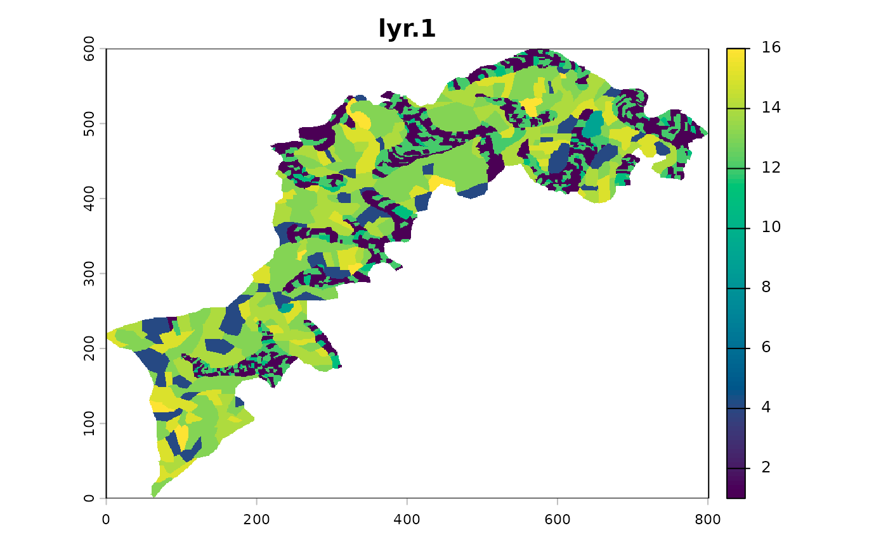
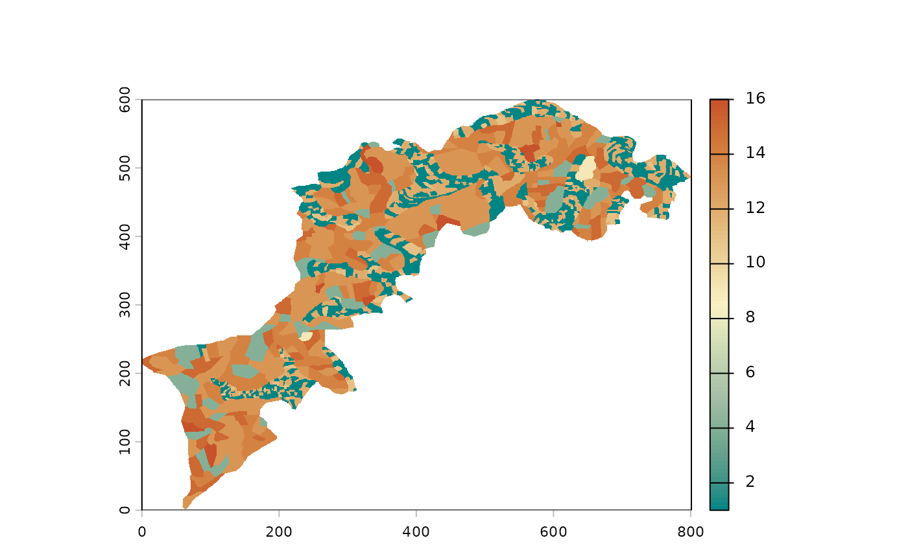
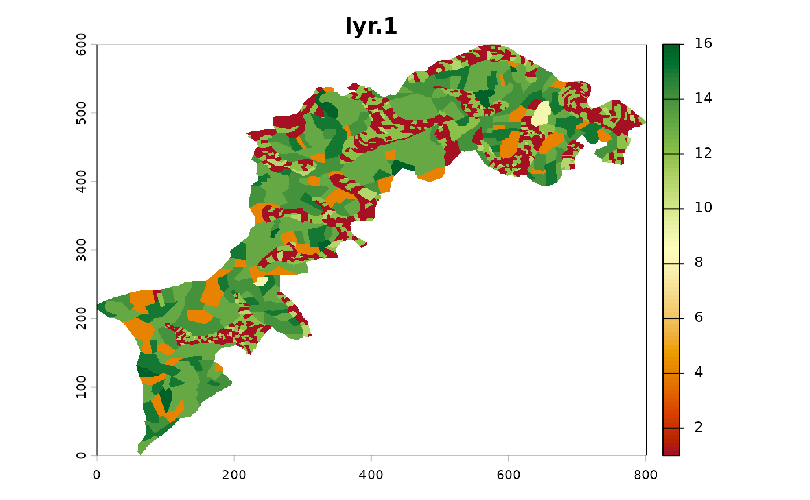
For palette enthusiasts, the full list is available there:
hcl.pals(). Any vector of colors is also accepted.
qualitative versus continuous raster
Depending on the nature of your layers, they may be by nature categorical/qualitative (for example land occupations) or continuous/quantitative (digital elevation map, rainfall records, etc.)
Should you want to explicitly declare qualitative layers as factors,
you can use raster_reclare_classes to turn your values into
factor, with an optionnal data.frame as
follows:
# enforce qualitative
l1 %>% raster_declare_classes() %>% p()
# for an explicit declaration with class names
# we will build a data.frame
# first extract all values
values <- l1 %>% values %>% na.omit() %>% as.numeric() %>% unique() %>% sort()
# and their correspondance (dummy)
labels <- c("shrub", "corn", "habitations", "forest1", "forest2", "forest3", "cereal1", "cereal2", "cereal3")
# build the data.frame
df <- data.frame(value=values, label=labels)
# and now
l1 <- l1 %>% raster_declare_classes(df)
p(l1)A nice side-effect is to have a better plot now. That you can push
further with a dedicated color scheme that can be passed to
p:
# a nice land occupation color scheme
land_occupations <- c("yellow", "gold", "orange",
"palegreen", "palegreen2", "palegreen3",
"slateblue", "slateblue4", "slategray")
#' and now a nice plot we have
x %>% p(palette=land_occupations)For those not familiar with the forward pipe %>% (or
|>), that may get confused with the use of one or the
other syntax, let’s just say that p(x) is equivalent to
x %>% p(). When more than a single function is called,
it helps defining more readable pipes. Read ?pipeOp` for
more informations.
Minify your landscape to speed up calculations
One very useful function is raster_resample(). Given
MHM() and CMP() imply huuuuge calculations, a
nice approach can be to setup and try/error your analyses with a
minified version of your landscape(s), then run the final one on the
pristine full res version.
That’s exactly what we will do here, to speed up calculations. Note
that below we exemplify how to use different color palette in
p().
# see hcl.pals() for a full list of palettes
l1 %>% raster_resample(0.1) %>% p(palette="Earth") 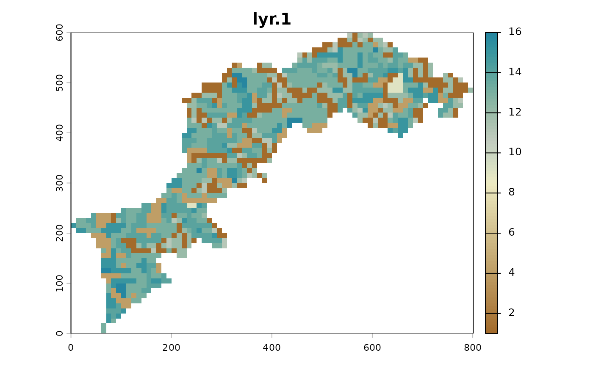
Other raster helpers
More generally, all raster_* functions implement common
basic manipulations on rasters. See ?raster_helpers.
For example, to explicitly declare your NAs, use
raster_declareNA().
Some other examples:
raster_likely_categorical(l1) # a non perfect heuristic based on the number of classes. See ?cats
#> [1] TRUE
raster_classes(l1) # class names. again to declare name explicitly, see ?cats
#> [1] "1" "4" "9" "11" "12" "13" "14" "15" "16"As stated before, you can use terra functions and/or
combine with mucha’s ones:
MHM: multiscale statistics on a single landscape
Base usage
Vanilla MHM() runs with candid default values (see
?MHM):
- focal
function ismean -
windowisc(3, 13, 23) - with a circular
kernel
fun can be passed with any function returning a
scalar, ie a numeric of length 1, ie a single value. See
?mhm_funs for richness, simpson
and shannon indices, etc. and also contagion
and kappa_index for categorical landscapes.
window must only contain odd numbers.
odd_floor is your friend to do so.
window_broad and window_linearpixels are
helpers to obtain (often) interesting window size range.
*kernel can be passed with one of kernel
function (ie to have square, gaussian, etc.). With
kernel_gaussian, only sum is allowed by
terra.
Let’s change a bit default values to i) change the window range and ii) use richness (ie count the number of classes). Before that, we resample so that calculations are not too long while we’re still tuning our analyses.
l1_lite <- raster_resample(l1, width = 120)
w <- window_linearpixels(l1_lite, steps = 6)
l1_mhm <- MHM(l1_lite,
fun=richness,
window = w)Monoscale maps, multiscale map and profile plot
The object you obtain is also a SpatRaster on which you
can access particular layers with say l1_mhm[[2]]. But it
is probably more interesting to have a look to all monoscale
maps at once:
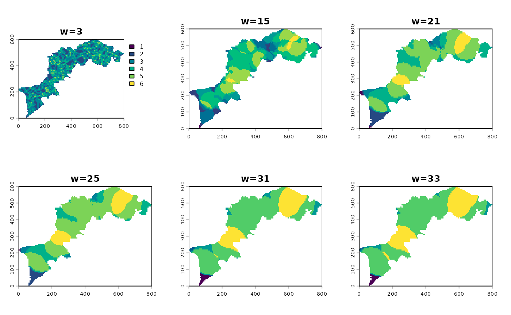
You can all apply one more function accross all layers and calculate a composite map, aka a multiscale map:
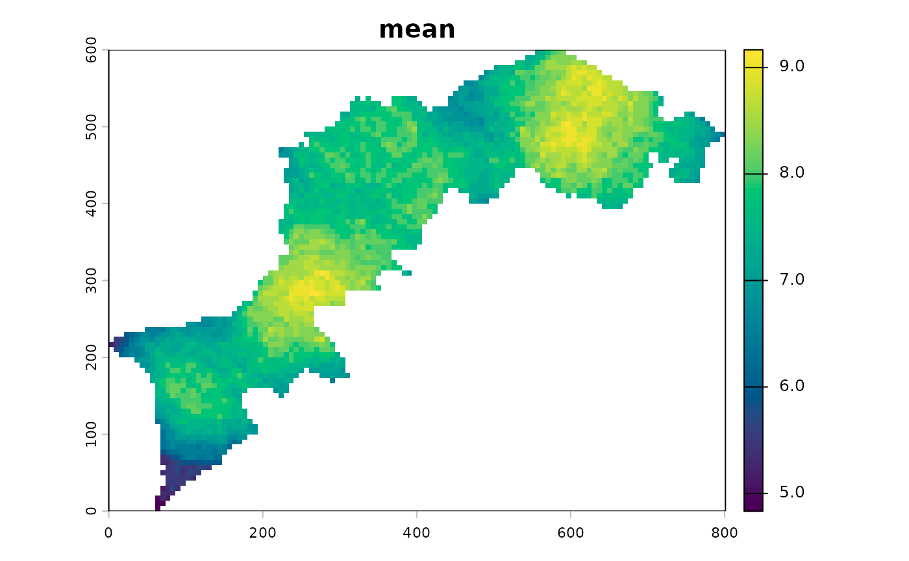
At this step, a geometric mean exacerbates the gradients:
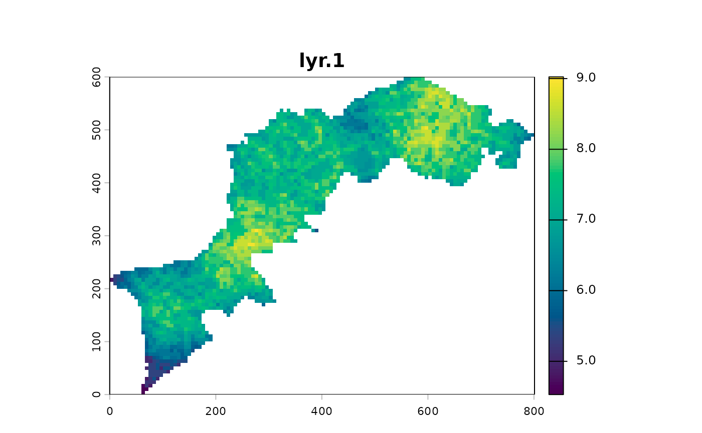
You can calculate the profile plot and calculate a global summary using two functions per window size and plot it.
l1_mhm %>% ms_profile() # mean ± SD by default
l1_mhm %>% ms_profile(summary_fun=median, error_fun = sd, ylab="median ± sd") # mean ± SD by default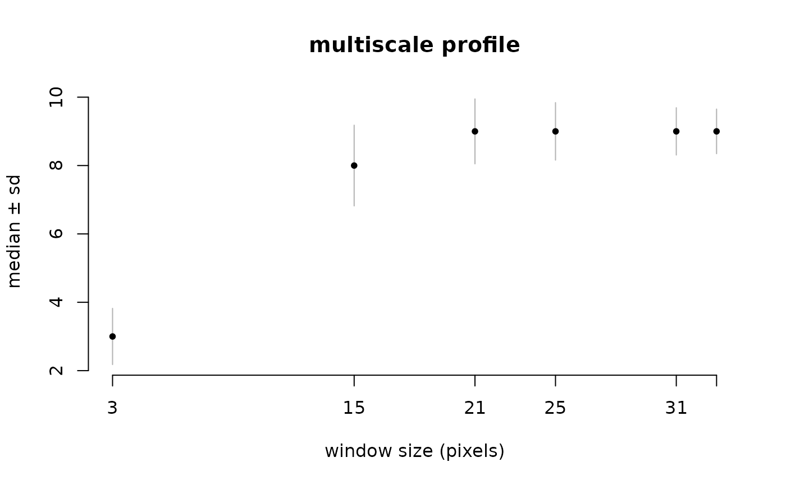
CMP: multiscale statistics on a pair of rasters
CMP works almost exactly the same except that it uses two landscapes
and consequently uses appropriate (and other) functions (See
?cmp_funs).
That being said, what follows should sound familiar.
# let's iport the two example rasters from CMP paper
l1 <- import_example("l1.tif") %>% raster_resample(0.2)
l2 <- import_example("l2.tif") %>% raster_resample(0.2)
# let's plot them
c(l1, l2) %>% p()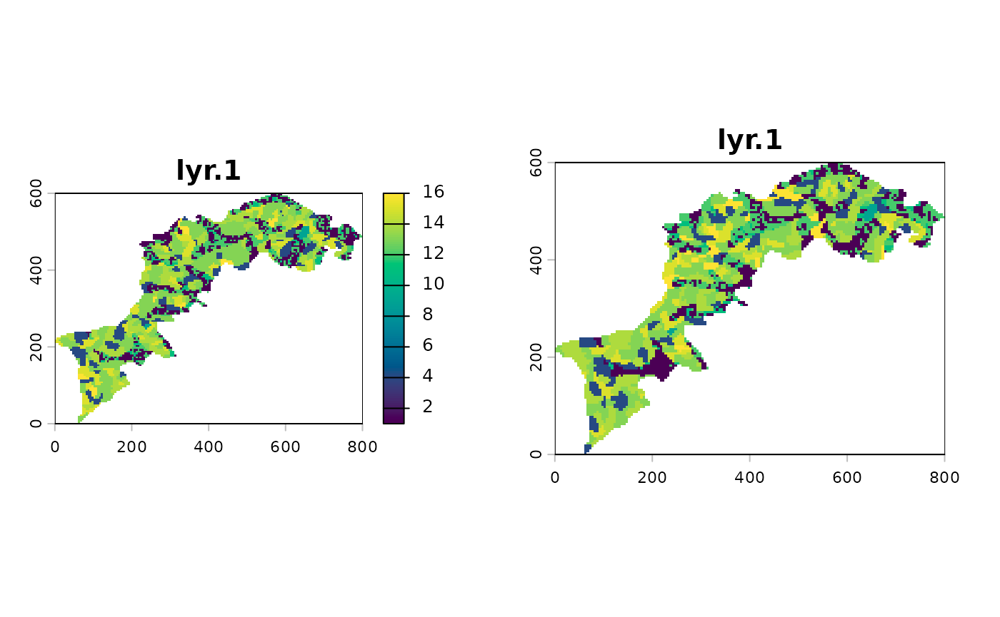
Now we will calculate CMP using a bare correlation.
l12_cmp <- CMP(l1, l2, fun=dist_euclidean)And again, show the different summaries starting with the monoscale maps, then the profile plot and finally the multiscale map:
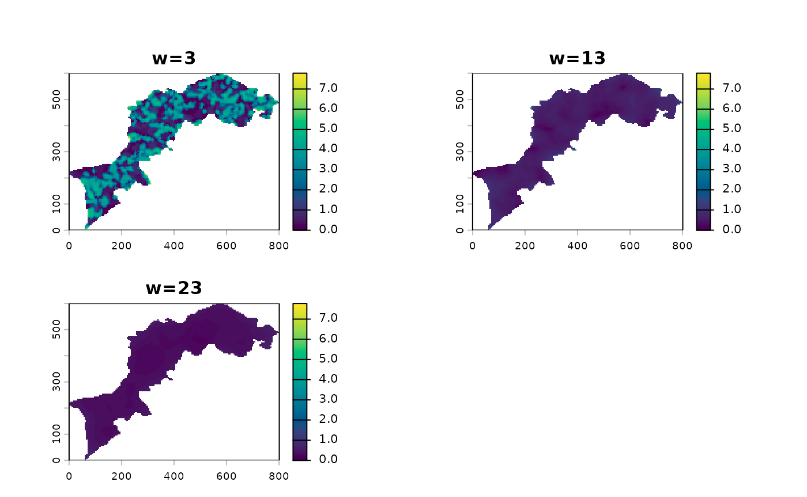
l12_cmp %>% ms_profile()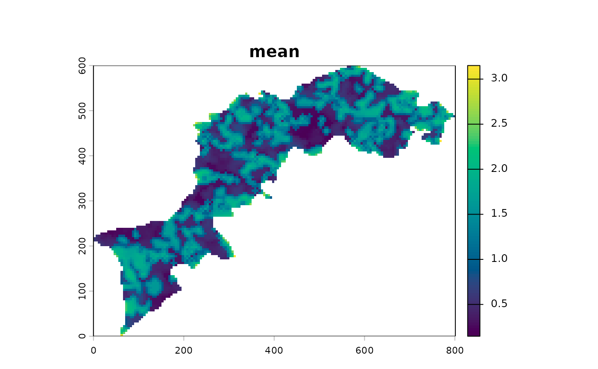
Export results
Have a look to export_image and export_txt
functions.
Otherwise follow terra guidelines for manipulation the
stack of monoscales layers.
Going further
Can I use custom functions for MHM and CMP?
Yes, have a look to function definitions, eg shannon or
cor_pearson (no parentheses to access function definition)
and mimic it. For both MHM and CMP, do not
forget ... as an argument. For CMP, think of
declaring x and y as arguments.
Can I write my own ms_profile function, eg in
ggplot2?
Sure, and ms_profile_df may help to do so.
Should you have any idea, suggestions, etc. feel free to contact me: bonhomme.vincent@gmail.com